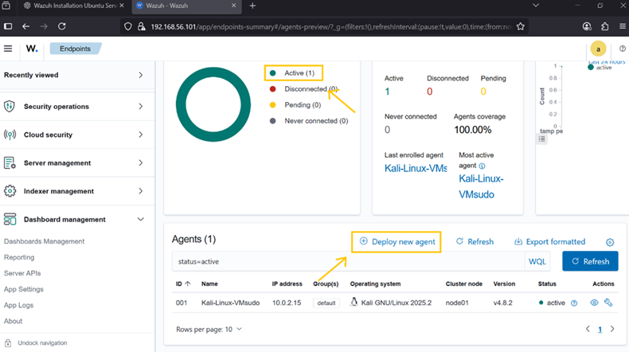
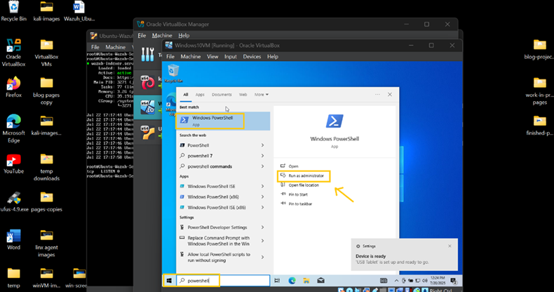
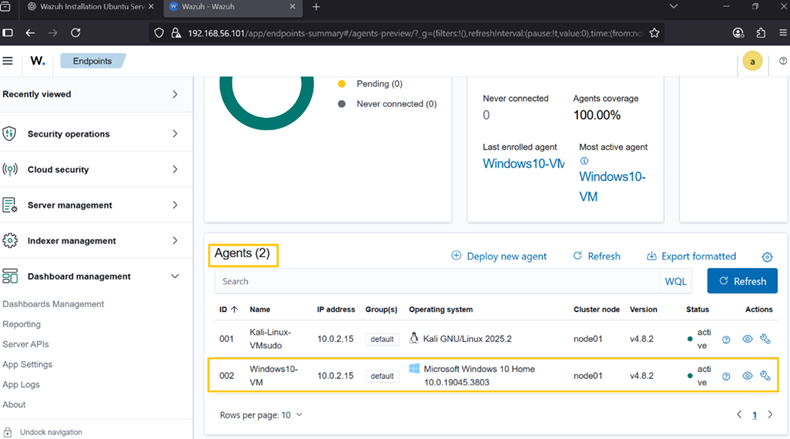

Overview
The Wazuh Agent collects Windows security events, system activity, and integrity changes and forwards them to the Wazuh Manager for analysis and alerting.
Requirements
- Windows 10 VM
- Wazuh Server (Ubuntu) deployed
- Wazuh Dashboard access
- Network connectivity between systems
Step 1 — Get Wazuh Server IP
On Ubuntu Wazuh Server:
ip a
Identify the inet address used for agent communication.

Step 2 — Deploy Agent from Dashboard
- Open Wazuh dashboard
- Go to Agents → Deploy New Agent
- Select MSI package
- Enter server IP
- Name agent (Windows10-VM)
- Copy install commands

Step 3 — Install Agent on Windows 10
- Open Windows VM
- Run PowerShell as Administrator
- Execute installation commands from dashboard
Start service:
NET START WazuhSvc

Step 4 — Verify in Dashboard
The Windows 10 VM should now appear as an active agent in the Wazuh dashboard.

Step 5 — Monitoring Scope
- Windows event logs
- File integrity monitoring
- Registry modifications
- Process and service monitoring
Install Complete
Windows 10 is now integrated into the SIEM pipeline as a monitored endpoint.